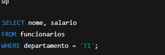
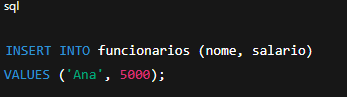
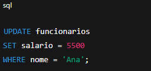
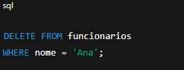

São os comandos SQL usados para trabalhar diretamente com os dados dentro de tabelas (inserir, consultar, atualizar e remover)
👉 o DML mexe nos dados que estão dentro dessas tabelas.
1️⃣ SELECT — Buscar dados

SELECT → Sera as colunas que você vai visualizar.
FROM → de qual tabela.
WHERE → filtra apenas as linhas que você quer ver.
2️⃣ INSERT → Inserir dados Usado para adicionar novas linhas em uma tabela.
INSERT INTO → tabela onde vai colocar os dados.
(colunas) → define onde cada valor vai entrar.
VALUES → os valores que você quer inserir.
3️⃣ UPDATE → Atualizar dados Usado para alterar informações existentes. UPDATE → tabela que será modificada.
SET → coluna que vai mudar e o novo valor.
WHERE → limita quais linhas serão alteradas.
4️⃣ DELETE → Excluir dados Usado para remover registros. DELETE FROM → tabela de onde vai remover os dados.
WHERE → quais linhas apagar.
Todos os comandos do DML afetam linhas de tabelas (não a estrutura da tabela em si)
Normalmente, eles rodam dentro de transações: você pode dar COMMIT para confirmar ou ROLLBACK para desfazer.
Sem um WHERE, UPDATE e DELETE podem afetar toda a tabela! 😱